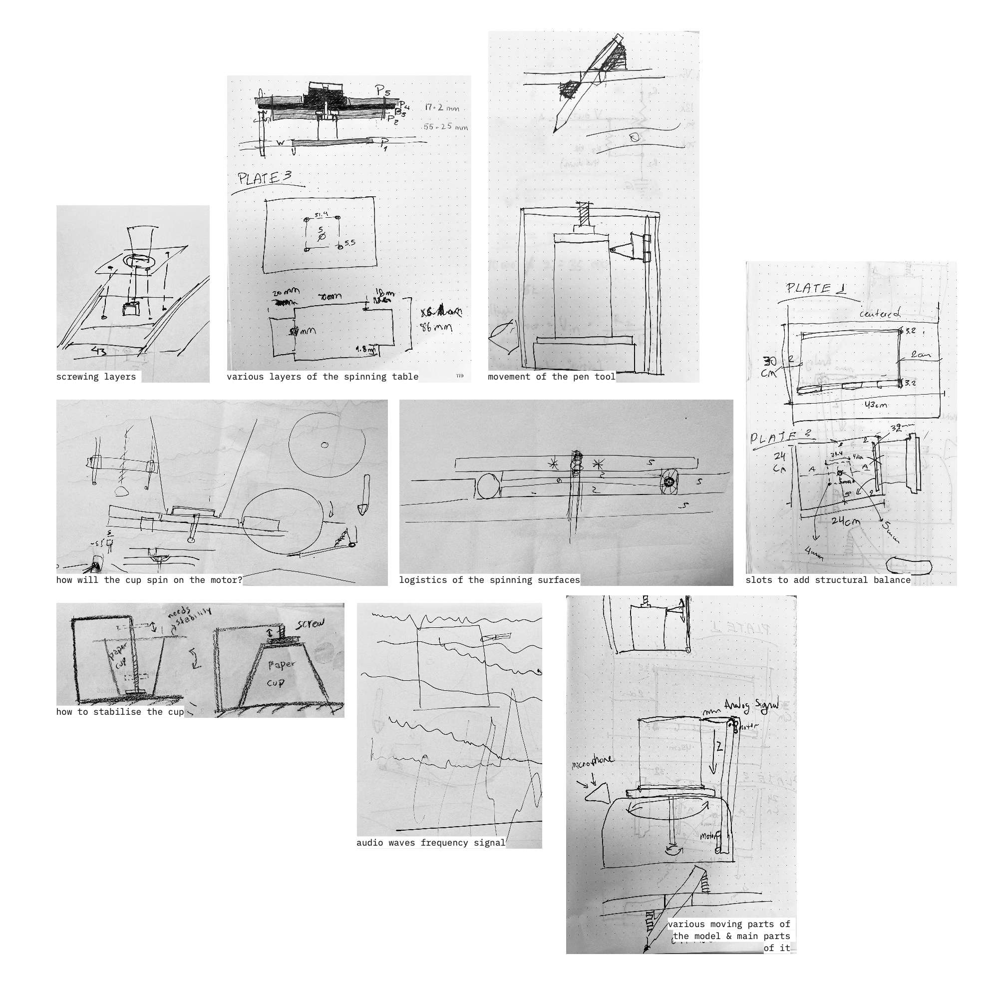
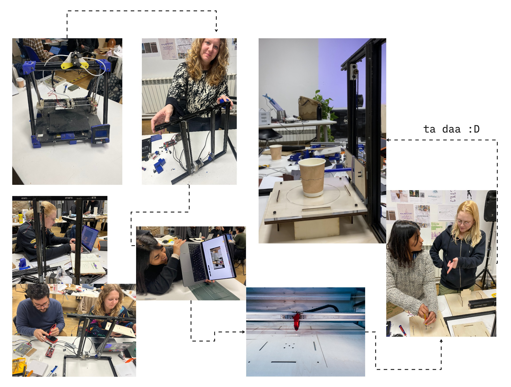

andaaza¶
initial ideas¶
we started by ideating about the concept of measuring in a post scientific way from a hyperpersonal perspective. We speculated and questioned each other:
- when does measuring stop facilitating and start preventing a process?
- are the usual measuring units opposite to replicability?
- why do we measure things? ..to save time instead of doing everything by trial & error, capitalism, control outcome prediction.
other fields we wanted to explore were storytelling, the strict binary distinction between the ‘positive’ and the ‘negative’ of molds and objects.
eventually, our final idea emerged and triggered questions about…
what if we can store data inside objects we use in our daily life?
what is our coffee cup is also a pen drive, which has a song from your grandma or encrypted your passwords?
what if we can store data into objects we use in our daily life?
what is our coffee cup is also a pen drive, which has a song from your grandma or encrypted your passwords?
concept¶
we are creating a tool that will encode audio messages into physical objects, which will then be retrieved and sonified. it will read or listen the messages we give and will engrave them on ceramics. cups, pots and other things will be carriers of our stories and will travel through time. it is a concept that deals with continuity and archiving.
for this first prototype, we are writing audio messages in real-time. a microphone will capture the audio and through arduino it will convert the message into a sound waves, which will be getting written on a paper cup.
the central idea has a lot of potential both on a theoretical, speculative level but also on the technological level. based on our existing collective knowledge we approached this challenge with a ‘realistic ambition’.
plan¶
we started imagining how it would look, what materials, motors and tools would we need. the more we tried to describe it, the more complex it got. multiple axes, motors, spinning wheels and plates started getting shape.. and that was only the hardware.
This project made use of some parts rescued from an out of service reprap 3D printer that was left in out classroom from the ‘tech beyond the myth’ course, so we started by disassembling it. We used 2 servo motors, one for the turntable and one for the 2-axis. We also repurposed the controller boards which consistsed of an Arduino Mega and a Ramps 1.4 shield for the Mega. In addition to the electronics we were able to use the alumunim rails and various nuts and bolts from the old 3D printer to construct the drawing/carving machine.

iterating¶
according to our predictions, we were relatively lucky. we managed to make our first laser cut pieces fit together (ok, with some sanding).
we had to test the holes for the press fit a couple of times before sending our full printing file, which was different for each material.


problems and improvements¶
We knew this would be an ambitious artifact to make, and we most likely wouldn’t be able to complete it in the four days of the first micro challenge. We planned to make the first iteration of the prototype in the first week, which consists of a motorized turntable and an arm that could move up and down and hold different toolheads such as a pen. This first iteration was designed to write on a paper cup and test out our idea.
Though we didn’t have time to connect the sound input to the project, we did manage to connect a microphone and plot the sound on the Arduion serial plotter. We will be exploring the sound interface in the coming weeks. This week, we managed to build a simple turntable and motorize it, as well as create a frame for the z-axis that will serve as an interchangeable toolhead for pens and carving tools. We still have some work to do on the z-axis plate to correct some sagging as it moves up and down as well as redesiging it to better hold pens and tools. Though our rubberband solution works quite well, especially if there are only 4 days to build. :)
Click on the image to view the presentation :)

Useful Links and References¶
Using the Arduino AccelStepper Library
AccelStepper Library
Vinyl Record Cutting Lathe Fabacademy Project by Ambroise de Vries
DIY Record Cutting Fabacademy project by David Robert